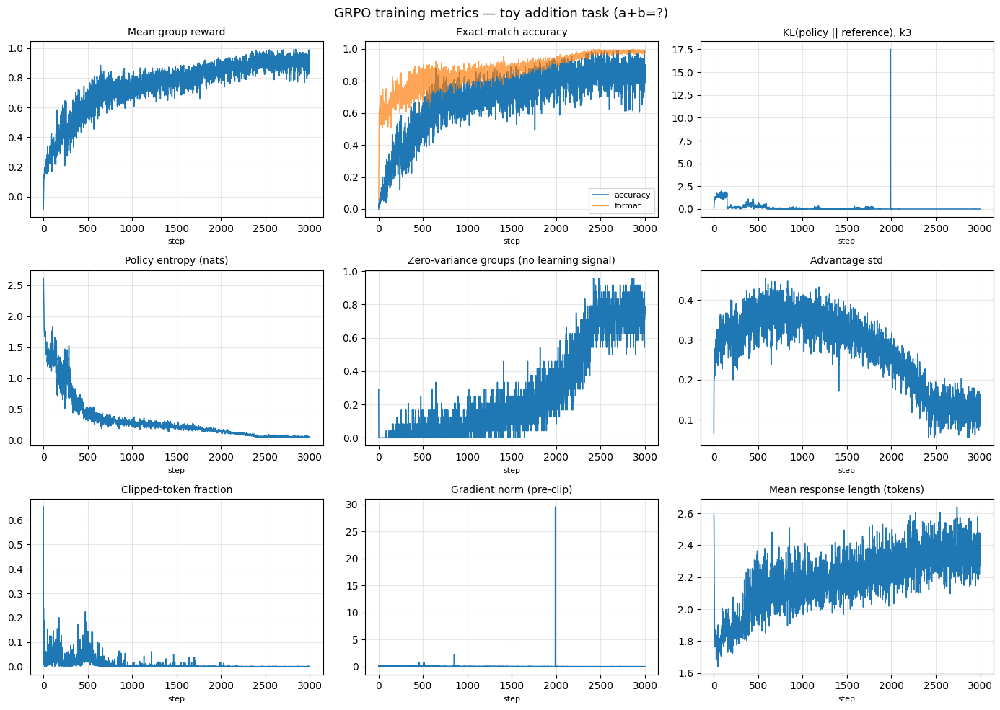

Building Group Relative Policy Optimization end to end — and watching a tiny transformer learn single-digit addition by reinforcement learning.
GRPO (Group Relative Policy Optimization) is the reinforcement-learning algorithm behind DeepSeek-R1 and much of the current wave of reasoning models. It strips the learned value critic out of PPO and replaces it with one disarmingly simple idea: sample a group of completions for each prompt, and judge every completion against its group's average reward. Better-than-average samples get reinforced; worse-than-average ones get suppressed. No value network, no GAE — just relative comparison within a group.
This post implements the whole thing from scratch — model, sampling, reward, advantages,
the clipped surrogate, KL, and entropy — in a few hundred lines of PyTorch, and trains it on
a deliberately tiny task: teach a small transformer to compute a+b for single digits.
The task is trivial enough to train in minutes on a single GPU, yet it exercises every moving part
of a real GRPO run, and every failure mode shows up in the metrics. If you want the companion
debugging reference, see
A Practical GRPO Reference: Metrics to Watch and Configs to Tune.
Everything tunable in one place. GRPO inherits PPO's sampling and trust-region knobs and adds a
few of its own: the group size G, whether to normalize advantages by
their group standard deviation, and how often to re-sync the reference policy. The values below are
tuned for from-scratch training, which is why the learning rate (1e-3) and
entropy bonus (0.08) are far larger than you'd use when fine-tuning a pretrained LLM.
Each completion is at most three tokens — two digits plus an end-of-sequence marker.
# --- Rollout / sampling ---
prompts_per_step: int = 24 # prompts sampled per step (the batch dimension, B)
group_size: int = 16 # G: completions sampled per prompt
max_new_tokens: int = 3 # max completion length (<=2 digits + EOS)
temperature: float = 1.0 # rollout sampling temperature (primary exploration knob)
# Optional: max_prompt_length, top-k, top-p, repetition penalty.
# --- Optimizer & schedule ---
steps: int = 3000 # total training steps
lr: float = 1e-3 # learning rate (large, since we train from scratch)
max_grad_norm: float = 1.0 # gradient-norm clip threshold
# --- GRPO advantage ---
norm_std: bool = False # divide advantage by group std? (off when std is small)
adv_eps: float = 1e-4 # epsilon in the std denominator (only used if norm_std)
# --- Surrogate & trust region ---
clip_eps: float = 0.2 # PPO clip width: ratio clipped to 1 +/- clip_eps
inner_epochs: int = 2 # "mu": gradient epochs per rollout batch
# Optional: mini_batch_size
# --- KL & reference policy ---
kl_beta: float = 0.02 # weight of KL(pi || pi_ref) in the loss
ref_sync_every: int = 150 # refresh the reference policy every N steps
# --- Entropy (exploration) ---
ent_coef: float = 0.08 # entropy bonus coefficient, annealed -> ~0A reinforcement-learning loop needs a policy to optimize. Here it is TinyGPT: a
two-layer, causally-masked Transformer over a 15-token vocabulary (the ten digits, +,
=, and three special tokens). It is a decoder-only language model implemented with a
TransformerEncoder plus a triangular attention mask. The vocabulary together with
encode_prompt / decode_completion plays the role a tokenizer would in a
real pipeline — turning "3+4=" into token ids, and decoded completions back into
strings.
import math
import random
import numpy as np
import torch
import torch.nn as nn
import torch.nn.functional as F
import torch.distributions as dist
device = "cuda" if torch.cuda.is_available() else "cpu"
print("device:", device)
# Vocabulary: digits 0-9, '+', '=', and the special tokens BOS, EOS, PAD.
TOKENS = [str(d) for d in range(10)] + ["+", "=", "<bos>", "<eos>", "<pad>"]
STOI = {t: i for i, t in enumerate(TOKENS)}
PLUS, EQ, BOS, EOS, PAD = (STOI[t] for t in ["+", "=", "<bos>", "<eos>", "<pad>"])
VOCAB = len(TOKENS)
def encode_prompt(a, b):
# Token ids for the prompt "a+b=" (with a leading BOS).
return [BOS] + [STOI[c] for c in f"{a}+{b}="]
def decode_completion(toks):
# Turn generated token ids back into a string, stopping at the first EOS.
out = []
for t in toks:
if t == EOS:
break
out.append(TOKENS[t] if t < 10 else "?")
return "".join(out)
class TinyGPT(nn.Module):
def __init__(self, vocab=VOCAB, d=128, n_head=4, n_layer=2, max_len=16):
super().__init__()
self.tok = nn.Embedding(vocab, d)
self.pos = nn.Embedding(max_len, d)
layer = nn.TransformerEncoderLayer(
d_model=d,
nhead=n_head,
dim_feedforward=4 * d,
batch_first=True,
dropout=0.0,
norm_first=True,
activation="gelu",
)
self.blocks = nn.TransformerEncoder(
layer, num_layers=n_layer, enable_nested_tensor=False
)
self.ln = nn.LayerNorm(d)
self.head = nn.Linear(d, vocab, bias=False)
def forward(self, idx): # idx: (B, T) -> logits: (B, T, V)
B, T = idx.shape
x = self.tok(idx) + self.pos(torch.arange(T, device=idx.device))[None]
# Causal mask: each position attends only to itself and the past.
mask = torch.triu(torch.full((T, T), float("-inf"), device=idx.device), 1)
x = self.blocks(x, mask=mask)
return self.head(self.ln(x))GRPO keeps two copies of the network: the policy we train, and a frozen
reference that anchors the KL penalty so the policy cannot drift arbitrarily far
from sensible behavior. Both start from the same random initialization — the from-scratch
setting — and rather than pinning the reference to a fixed SFT checkpoint, we periodically
re-sync it to the policy (see ref_sync_every in the training step). Seeding everything
keeps the run reproducible.
seed = 0
torch.manual_seed(seed)
random.seed(seed)
np.random.seed(seed)
# Policy network (trained) plus a frozen reference copy used as the KL anchor.
model = TinyGPT().to(device)
ref_model = TinyGPT().to(device)
ref_model.load_state_dict(model.state_dict())
for p in ref_model.parameters():
p.requires_grad_(False)RL replaces labels with a reward, and compute_reward is the entire supervision
signal. It gives a small penalty for malformed output, full credit for the exact answer, and
graded partial credit that decays with distance from the truth. That dense shaping
is what gives the policy a gradient to climb before it can reliably solve the task — a
pure all-or-nothing reward would leave it stuck at zero for a long time. generate_dataset
synthesizes a fresh batch of random a+b problems every step, so the model never sees a
fixed dataset; it has to learn the operation, not memorize a lookup table.
def compute_reward(completion_tokens, answer):
"""Returns (reward, well_formed, exactly_correct)."""
text = decode_completion(completion_tokens)
# Well-formed = a 1-2 digit number that actually terminated with EOS.
well_formed = text.isdigit() and 1 <= len(text) <= 2 and EOS in completion_tokens
if not well_formed:
return -0.1, 0.0, 0.0
val = int(text)
if abs(val - answer) < 0.001:
return 1.0, 1.0, 1.0 # exactly correct
# Partial credit: answers closer to the target score higher (dense shaping).
return 0.1 + 0.5 * math.exp(-abs(val - answer) / 3.0), 1.0, 0.0
def generate_dataset(prompts_per_step, group_size):
# Sample random single-digit addition problems.
pairs = [
(random.randint(0, 9), random.randint(0, 9)) for _ in range(prompts_per_step)
]
dataset = [
{"prompt": f"{a}+{b}", "encoded": encode_prompt(a, b), "answer": float(a + b)}
for a, b in pairs
]
# A real pipeline's tokenizer would handle padding/truncation and return
# input_ids + attention_mask; here every "a+b=" prompt has the same length.
input_ids = torch.tensor(
[example["encoded"] for example in dataset], dtype=torch.long, device=device
)
golden_answers = torch.tensor(
[example["answer"] for example in dataset], dtype=torch.float32, device=device
)
return input_ids, golden_answerswell_formed and
exactly_correct flags don't affect the gradient — they exist purely so we can log
format-rate and true accuracy separately from the shaped reward the policy actually optimizes.
Tracking an independent correctness metric is how you catch reward hacking.AdamW, plus a dictionary of metric lists. The logging is not an afterthought: in RL the loss value is nearly meaningless (it is an objective to ascend, not a quantity that monotonically decreases), so you debug almost entirely from these curves — reward, accuracy, KL, entropy, advantage spread, clip fraction, and response length.
optimizer = torch.optim.AdamW(model.parameters(), lr=lr)
# Per-step metric history. Watching these curves is how you debug GRPO.
history = {
k: []
for k in [
"reward",
"accuracy",
"format",
"kl",
"entropy",
"clip_frac",
"loss",
"grad_norm",
"adv_std",
"frac_zero_adv_groups",
"resp_len",
]
}This is step 1 of the loop. generate samples completions autoregressively from the
current policy under @torch.no_grad(). Two details matter specifically for RL.
First, sampling is stochastic (temperature > 0): exploration is the
whole game, since the policy can only learn from the variety of completions it produces. Second,
once a sequence emits EOS it is padded with PAD, so post-EOS tokens can be
masked out of the loss later instead of polluting it.
@torch.no_grad()
def generate(model, input_ids, max_new_tokens, temperature):
"""Autoregressively sample completions for a batch of prompts."""
model.eval()
sequence = input_ids.clone()
# Track which sequences have emitted EOS so we stop extending them.
done = torch.zeros(input_ids.size(0), 1, dtype=torch.bool, device=device)
for _ in range(max_new_tokens):
outputs = model(sequence) # (B*G, S, V)
next_token_logits = outputs[:, -1, :] # next-token logits: (B*G, V)
# Optional: repetition penalty, top-k / top-p truncation could go here.
if temperature == 0.0:
# Greedy decoding.
next_token = torch.argmax(next_token_logits, dim=-1).unsqueeze(-1)
else:
next_token_logits = next_token_logits / temperature
probs = F.softmax(next_token_logits, dim=-1)
if not torch.isfinite(probs).all():
raise RuntimeError("non-finite sampling probs — training diverged")
next_token = torch.multinomial(probs, num_samples=1)
# Once a sequence is done, keep appending PAD so post-EOS tokens get
# masked out of the loss instead of polluting it.
next_token = torch.where(done, torch.full_like(next_token, PAD), next_token)
done = done | (next_token == EOS)
# Optional early stop once every sequence has finished:
# if done.all():
# break
sequence = torch.cat([sequence, next_token], dim=1)
model.train()
return sequenceThis function is the bridge between sampled tokens and a differentiable objective. For every
generated token it returns three things the surrogate needs: the log-probability
the model assigns to the token actually produced, the per-position entropy (the
exploration signal), and a completion mask that zeroes out prompt and padding
positions. Computing entropy through torch.distributions.Categorical rather than the
naive -(p*log p).sum() avoids NaNs and keeps it aligned to the same
S-1 length as the log-probs.
def per_token_logprobs(model, generated_sequences, temperature, prompt_length):
"""Per-token log-probs, entropy, and a completion mask for each sequence."""
logits = model(generated_sequences) # (B*G, S, V)
# Predict token t+1 from position t: drop the last step, scale by temperature.
shifted = logits[:, :-1, :].float() / temperature # (B*G, S-1, V)
targets = generated_sequences[:, 1:] # (B*G, S-1)
logprobs_all = F.log_softmax(shifted, dim=-1)
# Entropy of the policy (exploration signal). torch.distributions is used
# for a numerically stable value aligned to the S-1 length.
policy_dist = dist.Categorical(logits=logits[:, :-1, :])
entropy = policy_dist.entropy() # (B*G, S-1)
# Log-prob of the token actually generated at each position.
logprobs = logprobs_all.gather(-1, targets.unsqueeze(-1)).squeeze(-1) # (B*G, S-1)
# Mask in only completion tokens (after the prompt) that are not PAD.
# Since PAD follows the first EOS, this stops right after EOS.
S = generated_sequences.size(1) - 1
pos = torch.arange(S, device=device).unsqueeze(0) # (1, S-1)
completion_mask = (pos >= prompt_length - 1) & (targets != PAD)
return logprobs, entropy, completion_maskThe heart of the algorithm: one full optimization step, annotated to match the seven stages below. It rolls out a batch, scores it, converts rewards into group-relative advantages, freezes the “old” and reference log-probs, then runs a few inner PPO epochs of the clipped surrogate plus the KL penalty and entropy bonus. A few things are worth pausing on:
reward − group_mean
(optionally divided by the group's std).exp(Δ) − Δ − 1,
which is unbiased and always non-negative — far better behaved than a raw
log-ratio difference.def train_step(step):
# 1) Fresh rollout batch: sample prompts and replicate each G times.
input_ids, golden_answers = generate_dataset(prompts_per_step, group_size)
prompt_length = input_ids.shape[1] # P
repeated_inputs = input_ids.repeat_interleave(group_size, dim=0) # (B*G, P)
repeated_answers = golden_answers.repeat_interleave(group_size, dim=0) # (B*G,)
# 2) Generate G completions per prompt with the current policy.
model.eval()
generated_sequences = generate(
model, repeated_inputs, max_new_tokens, temperature
) # (B*G, S)
# 3) Score every completion with the programmatic reward.
completions_only = generated_sequences[:, prompt_length:] # (B*G, S-P)
completion_token_lists = [seq.tolist() for seq in completions_only]
correct, fmt_ok, rewards_list = [], [], []
for tokens, answer in zip(completion_token_lists, repeated_answers):
rew, well_formed, exact = compute_reward(tokens, answer)
rewards_list.append(rew)
correct.append(exact)
fmt_ok.append(well_formed)
rewards = torch.tensor(rewards_list, dtype=torch.float32, device=device) # (B*G,)
# 4) Group-relative advantage: center each completion against its group.
grouped = rewards.view(-1, group_size) # (B, G)
mean = grouped.mean(dim=1, keepdim=True) # (B, 1)
std = grouped.std(dim=1, keepdim=True) # (B, 1)
if norm_std:
advantages = ((grouped - mean) / (std + adv_eps)).view(-1) # (B*G,)
else:
advantages = (grouped - mean).view(-1) # (B*G,)
zero_groups = (std.squeeze(1) < 1e-8).float().mean().item()
# 5) Freeze the "old" and reference log-probs for this rollout batch.
with torch.no_grad():
old_logprobs, _, _ = per_token_logprobs(
model, generated_sequences, temperature, prompt_length
)
ref_logprobs, _, _ = per_token_logprobs(
ref_model, generated_sequences, temperature, prompt_length
)
# 6) Anneal entropy bonus (alpha) and cosine-decay the learning rate.
frac = step / steps
alpha = ent_coef * max(0.0, 1.0 - frac / 0.8) + 0.003
for pg in optimizer.param_groups:
pg["lr"] = lr * (0.15 + 0.85 * 0.5 * (1 + math.cos(math.pi * frac)))
# 7) Inner PPO epochs: reuse the rollout batch for a few gradient steps.
model.train()
for _ in range(inner_epochs):
cur_logprobs, entropy, completion_mask = per_token_logprobs(
model, generated_sequences, temperature, prompt_length
) # (B*G, S-1)
# Importance-sampling ratio between the current and old policy.
ratio = torch.exp(cur_logprobs - old_logprobs) # (B*G, S-1)
# Clipped surrogate objective (same advantage broadcast over tokens).
surrogate1 = ratio * advantages.unsqueeze(1)
surrogate2 = torch.clamp(
ratio, 1 - clip_eps, 1 + clip_eps
) * advantages.unsqueeze(1)
policy_loss = -torch.min(surrogate1, surrogate2)
# KL(policy || reference) via the unbiased, non-negative k3 estimator.
kl = torch.exp(ref_logprobs - cur_logprobs) - (ref_logprobs - cur_logprobs) - 1
# Full GRPO objective: surrogate + KL penalty - entropy bonus.
per_token_loss = policy_loss + kl_beta * kl - alpha * entropy
tokens_per_sequence = completion_mask.sum(1).clamp(1) # (B*G,)
loss = ((per_token_loss * completion_mask).sum(1) / tokens_per_sequence).mean()
# Policy update with gradient-norm clipping.
optimizer.zero_grad()
loss.backward()
gnorm = torch.nn.utils.clip_grad_norm_(model.parameters(), max_grad_norm)
optimizer.step()
# --- Logging: the signals you watch to debug GRPO ---
n = completion_mask.sum() # total completion tokens
# Reward & task performance.
history["reward"].append(rewards.mean().item())
history["accuracy"].append(float(np.mean(correct))) # exact-match (pass@1)
history["format"].append(float(np.mean(fmt_ok)))
# Divergence & exploration (both should decay gradually).
history["kl"].append(((kl * completion_mask).sum() / n).item())
history["entropy"].append(((entropy * completion_mask).sum() / n).item())
# Advantage health.
history["frac_zero_adv_groups"].append(zero_groups) # ->1 means no signal
history["adv_std"].append(advantages.std().item())
# Surrogate mechanics: fraction of tokens whose ratio was clipped.
clip_frac = (
((ratio > 1 + clip_eps) | (ratio < 1 - clip_eps)).float() * completion_mask
).sum() / n
history["clip_frac"].append(clip_frac.item())
# Optimization.
history["loss"].append(loss.item()) # noisy; not the headline metric
history["grad_norm"].append(float(gnorm)) # raw magnitude before clipping
# Output quality: rising length can signal length-bias reward hacking.
history["resp_len"].append(tokens_per_sequence.float().mean().item())
# Optional: periodically refresh the reference policy (the KL anchor).
if ref_sync_every and (step + 1) % ref_sync_every == 0:
ref_model.load_state_dict(model.state_dict())
return model, historyWith a single step defined, training is just calling it a few thousand times and logging every hundredth step. That is the whole driver:
for step in range(steps):
model, history = train_step(step)
if step % 100 == 0:
print(
f"step {step:4d} reward {history['reward'][-1]:+.3f} "
f"acc {history['accuracy'][-1]:.2f} fmt {history['format'][-1]:.2f} "
f"kl {history['kl'][-1]:.4f} ent {history['entropy'][-1]:.3f}"
)step 0 reward -0.084 acc 0.00 fmt 0.06 kl 0.0988 ent 2.616 step 100 reward +0.246 acc 0.14 fmt 0.60 kl 1.4993 ent 1.424 step 200 reward +0.482 acc 0.40 fmt 0.71 kl 0.1782 ent 0.875 step 300 reward +0.488 acc 0.42 fmt 0.72 kl 0.0023 ent 0.834 step 400 reward +0.513 acc 0.40 fmt 0.72 kl 0.4457 ent 0.550 step 500 reward +0.636 acc 0.55 fmt 0.81 kl 0.1934 ent 0.359 step 600 reward +0.661 acc 0.59 fmt 0.82 kl 0.0019 ent 0.348 step 700 reward +0.690 acc 0.68 fmt 0.75 kl 0.0611 ent 0.349 step 800 reward +0.678 acc 0.64 fmt 0.79 kl 0.0203 ent 0.360 step 900 reward +0.712 acc 0.65 fmt 0.83 kl 0.0026 ent 0.313 step 1000 reward +0.800 acc 0.77 fmt 0.88 kl 0.0046 ent 0.218 step 1100 reward +0.734 acc 0.71 fmt 0.81 kl 0.0014 ent 0.293 step 1200 reward +0.792 acc 0.80 fmt 0.82 kl 0.0001 ent 0.296
In a couple of minutes the policy goes from emitting random tokens (6% well-formed at step 0) to solving roughly four out of five addition problems exactly — learned entirely from the scalar reward, with no labeled answers ever shown to the model.
Nine panels tell the story of the run. They are meant to be read together — this is exactly the dashboard you watch on a real GRPO job.

a+b=? task.That's GRPO end to end: rollout, group-relative advantage, the clipped surrogate, and the KL and entropy regularizers — the same machinery that trains frontier reasoning models, shrunk to something you can read in one sitting. To take it further, swap the toy reward for a real verifier and the TinyGPT policy for a pretrained model; the structure of the loop does not change. For the metric-by-metric debugging guide and every configuration knob worth tuning, see the companion GRPO reference.